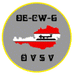

OE-CW-Gemeinschaft, (OE-telegrafiklubben) Österrikisk klubb för telegrafientusiaster.
Den främsta Österrikiska telegrafiintressegruppen
skulle vilja presentera sig
Morsetelegrafi är den äldsta och mest traditionella formen av fjärrkommunikation men tyvärr har dess era tagit slut inom den kommerciella radiotjänsten såväl som inom sjöfarten.
Om flera tusen radioamatörer i hela världen fortfarande använder sin telegrafinyckeln, är det inte bara på grund av entusiasters nostalgi utan för att telegrafin, såsom är allmänt erkänt, möjliggör global kommunikation med enkla medeln även under ofördelaktiga förhållanden.
För att tillhandahålla ett hem åt alla radioamatörer som vill använda sin nyckel åtminstone då och då eller - ännu bättre - för att ge förtur åt telegrafikommunikation i allmänhet har den österrikiska amatörradioföreningen - ÖVSV - beslutat att skapa en särskild sektion för telegrafi inom föreningen som jag tar hand om från 24:e maj 1997, och i den kan intresserade personer från Österrike såväl som från utlandet bli medlemmar i OE-CW-G, en intressegrupp för radiotelegrafi vars mål är att marknadsföra förbättringar av telegrafiteknik och uppmuntra användandet av telegrafi och därigenom försöka etablera kontakter och vänskap mellan radioamatörer i hela världen.
För alla som vill gå med i klubben gäller följande enkla ansökningsprocedur:
1. Skicka in en informell ansökan om medlemsskap i OE-CW-G
2. För att uppmuntra användandet av telegrafi på banden, skicka med 20 QSL-kort som bekräftar telegrafikontakter.
3. Genomför en kontakt (QSO) på någon av sked-kvällarna
4. För att täcka kostnader för utskrifter och porto, lägg in 8 IRCs eller passande värde i utlänsk valuta (medlemsskapet gäller tillsvidare och inga ytterligare avgifter samlas in).
Kontaktperson: OE6FYG Herbert Lafer Speltenbach 55 A-8280 Fürstenfeld
Månatligt QTC på tyska:
Den första lördagen varje månad på 3575 klockan 8 lokal tid.